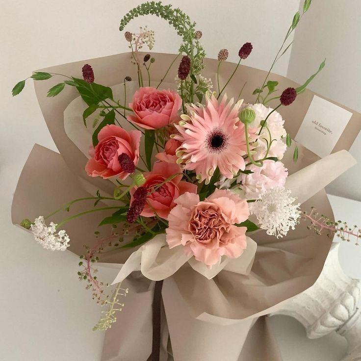
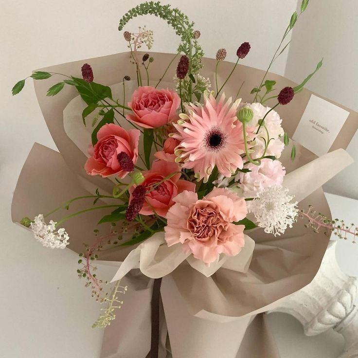
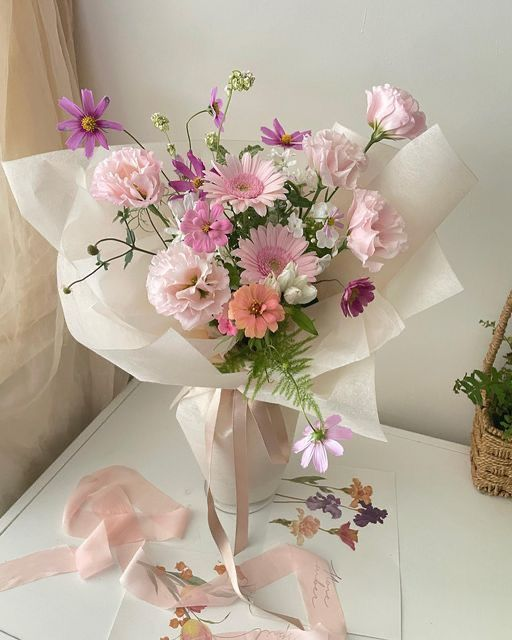
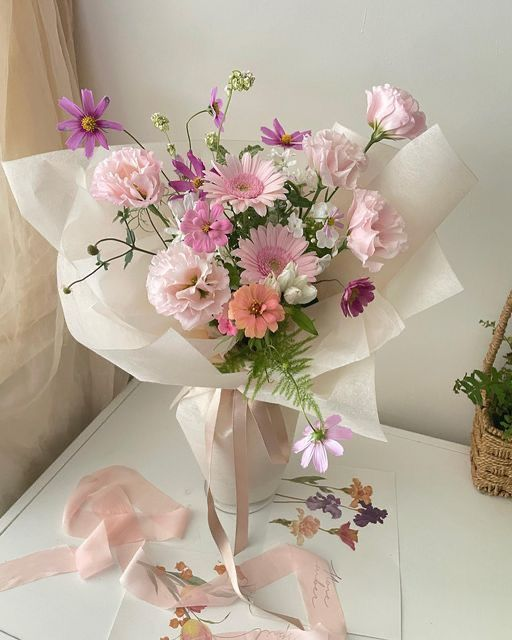

WHERE
LOVE
BLOOMS
About
At Where Love Blooms, we believe that flowers are more than just decoration—they are a language of emotions, a symbol of love, joy, and appreciation. Whether it’s to celebrate a momentous occasion or to brighten an ordinary day, flowers have the unique ability to touch hearts and create unforgettable memories. With a carefully curated collection of fresh and handpicked flowers, we take pride in offering stunning, elegant, and meaningful floral arrangements for all kinds of events. From the grandeur of weddings, anniversaries, and corporate gatherings to the simplicity of everyday celebrations, we ensure that each bouquet and arrangement reflects beauty, harmony, and personal sentiment. Each flower we use is meticulously selected and thoughtfully arranged by our skilled florists, blending art with passion to create exquisite designs. Every bouquet tells a story, and every petal is placed with intention, ensuring that what you receive is not just a floral arrangement but a heartfelt expression of emotion. Beyond aesthetics, we are committed to providing exceptional customer service. Our friendly and professional team is dedicated to making your floral experience seamless and delightful, from selecting the perfect arrangement to ensuring timely and safe delivery. Whether you seek a romantic bouquet, a comforting sympathy arrangement, or an enchanting floral décor for an event, we are here to bring your vision to life with unparalleled craftsmanship. At Where Love Blooms, we celebrate the natural beauty of flowers and the emotions they evoke. Let us be part of your cherished moments, transforming them into extraordinary experiences with the timeless elegance of fresh blooms. Because every occasion, big or small, deserves a touch of nature’s finest artistry. Discover our collection and let us help you make every moment more special with the beauty of flowers. 🌸✨
 

 


@WhereLVBlooms

+71897643209

@WhereLVBlooms